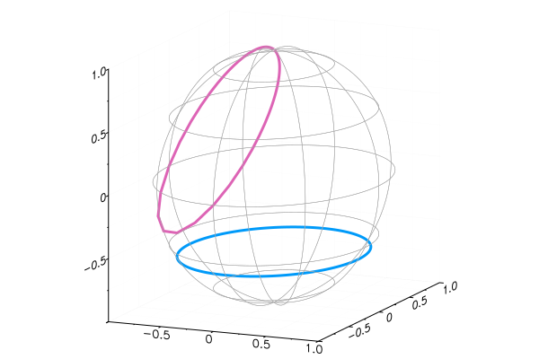

ComplexValues
This package provides two additional types for representing complex values in Julia: a Polar type for representation in polar coordinates, and a Spherical type for representation on the Riemann sphere. Both types also affect plotting commands in the Plots package.
Examples
julia> using ComplexValues
julia> Polar(1im)
Complex Polar: (modulus = 1.0, angle = 0.5⋅π)
julia> Polar.(exp.(1im*LinRange(0,2π,6)))
6-element Array{Polar{Float64},1}:
(modulus = 1.0, angle = 0.0⋅π)
(modulus = 0.9999999999999999, angle = 0.4⋅π)
(modulus = 1.0, angle = 0.8⋅π)
(modulus = 0.9999999999999999, angle = -0.8⋅π)
(modulus = 1.0, angle = -0.4⋅π)
(modulus = 1.0, angle = -1.4135798584282297e-16⋅π)
julia> Spherical(Inf)
Complex Spherical: (latitude = 0.5⋅π, angle = 0.0⋅π)A Spherical value can be converted to a 3-vector of coordinates on the unit sphere $S^2$.
julia> Spherical(0)
Complex Spherical: (latitude = -0.5⋅π, angle = 0.0⋅π)
julia> S2coord(ans)
3-element Array{Float64,1}:
6.123233995736766e-17
0.0
-1.0Plots
Plots of Polar type are as usual, but on polar axes.
using Plots # you must add this package first
zc = exp.(1im*2π*(0:500)/500);
plot(Polar.(0.5 .+ zc),legend=false)/home/travis/.julia/packages/GR/TMylY/src/../deps/gr/bin/gksqt: error while loading shared libraries: libQt5Widgets.so.5: cannot open shared object file: No such file or directory
connect: Connection refused
GKS: can't connect to GKS socket application
Did you start 'gksqt'?
GKS: Open failed in routine OPEN_WS
GKS: GKS not in proper state. GKS must be either in the state WSOP or WSAC in routine ACTIVATE_WS
zl = collect(LinRange(50-50im,-50+50im,601));
plot(Spherical.(zc/2),l=3,leg=false) # plot on the Riemann sphere
plot!(Spherical.(-1 .+ zl),l=3)/home/travis/.julia/packages/GR/TMylY/src/../deps/gr/bin/gksqt: error while loading shared libraries: libQt5Widgets.so.5: cannot open shared object file: No such file or directory
connect: Connection refused
GKS: can't connect to GKS socket application
Did you start 'gksqt'?
GKS: Open failed in routine OPEN_WS
GKS: GKS not in proper state. GKS must be either in the state WSOP or WSAC in routine ACTIVATE_WS
(Unfortunately, plotting backends and exports don't consistently support setting the aspect ratio in 3D. I've had success with plotlyjs() for interactive plots, though not when exporting them.)
Usage notes
- Either of the two new types can be converted to a built-in complex floating number via
Complex. - Promotion of any number along with a
Sphericalvalue results inSpherical. - Promotion of any built-in number type with a
Polarresults inPolar. - Standard unary and binary functions in
Baseare extended to work with the new types. - The type
AnyComplex{T<:AbstractFloat}is defined (but not exported) as the union of the built-inComplex{T}together withPolar{T}andSpherical{T}.